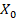
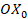
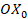
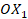

MECH 564 – Laboratory 1
“Introduction to MATLAB and Matrix Manipulation™”
Introduction:
MATLAB™ is a mathematical programming language and environment that has become one of the standard tools of analysis in the fields of controls, system dynamics, state machine design, image analysis, hardware in the loop simulation and more. MATLAB™ is used by every engineering company that I have worked for or with.
MATLAB™ is not the most-used language used in robotics industry, but it is simple to learn relative to other programming languages because MATLAB™ has reasonable debugging tools, ok help menus, a nice editor, and it is compiled transparently. The goal of this class is to learn the theoretical background of robotics and the simple setup of MATLAB will help us focus on the knowledge.
Learning Objectives:
1) Learn the structures of data and commands in MATLAB™.
2)
Gain knowledge and familiarity with the MATLAB™
interfaces (command prompt,
script files, M-files, and functions)
3)
Learn the ways to get help with MATLAB™ (help command, html help, Google)
4)
Solve some example
mathematics problems with MATLAB™, and plot the solutions
5)
Practice manipulation of rotation and homogeneous transformation matrix
6)
Compare MATLAB™ to your
Python, C, FORTRAN, MathCAD, Pascal,
BASIC… programming experiences
Task 1 – Data Structures
The most basic element in MATLAB™ is a double precision complex matrix. Many other kinds of data that MATLAB™ can work with are stored as double precision complex matrices. Inputting matrices to MATLAB™ can be done using the square brackets. At the command prompt type the following commands to create double precision complex matrices.
For example, you can use MATLAB™ like a calculator.
>> -1-1
>> 2^2
You can save answers by assigning them to variables.
>> x1 = [1,2,3]
%Creates a 1 row by 3 column
matrix
>> R0 = eye(3); % identity matrix.
>> R1 =
[ 1.0000 0 0
0 0.7071
-0.7071
0 0.7071
0.7071] % Rx(pi/4)
You have created a number of variables that are now present in the MATLAB™ workspace. They are available to be used as inputs to other functions.
>> R2 = R1’ % Creates a transpose of y3 and saves it over y3
>>
det(R2) % determinant
>>
clear
Task 2 – Built in Functions
MATLAB™ functions have the generic structure :
[output_var1, output_var2] = function_name(input1, input2,
…)
Some of these pieces may be left off, depending on how you call the function.
MATLAB™ has an incredible number of built-in functions.
>>
a = [4,9]
>> [y] = sqrt(a)
>> [z] = [max(a)
min(a) mean(a) size(a)]
>> t = [0:.1:10]
>> y = 2*sin(t)
>>
plot(t,y)
MATLAB™ has a couple of ways that you can get more help. Any of the built in MATLAB™ functions are described in the html help that you can access by pressing F1. Alternatively, you can type help at the command prompt followed by the name of the function.
>> help plot
How can you find the function that you are looking for (what if you don’t even know the name of the function)?
What is the function to find the arc tangent?
What is the function to find the real/imaginary component of a real/imaginary number?
What is the function to get a random number? How do you plot in 3d?
http://www.mathworks.com/support/ http://www.google.com http://www.mathworks.com/matlabcentral/fileexchange/
In addition, MATLAB has many of the traditional structures from C and FORTRAN including if, else, while, end, etc.
Task 3 – Other Types of MATLAB Interfaces
Now you are well practiced using the command prompt but the command prompt does not have good ways of saving, commenting, documenting your work. The second type of MATLAB™ interface is the script file. The script file works very similarly to the command prompt, you can type in commands to the script file and run them all at once.
To get to the MATLAB™ editor type:
>>
edit
You can save your scripts as text files with the extension *.m just like any other Windows program. Type these commands into the MATLAB™ editor:
>> x = 0:pi/10:2*pi;
>> y1 = sin(x);
>> y2 = sin(x-0.25);
>> y3 = sin(x-0.5);
>> figure
>> plot(x,y1,'g',x,y2,'b--o',x,y3,'c*')
Save and run the script file. Script files share the workspace with the MATLAB™ command window.
You can also define your own custom MATLAB™ functions. Start a new M-file and
type:
function out =
Rx(a)
% rotate around x
out = [ 1, 0, 0;...
0, cos(a), -sin(a);...
0, sin(a), cos(a)];
end
type in
Rx(pi/3)
You will see the rotational matrix corresponding to the rotation along axis for .
Task 4 – Debugging in MATLAB
One of the benefits of MATLAB as a tool for computational experimentation, design and research is that it does not precompile. We can see how that works through an example. Open the editor to create a new script file.
clear all; clc;
x = ones(1,10); %Create
an array of 10 ones.
for n = 2:6 %Perform a calculation on items 2-6 in the array x(n) = 2 * x(n-1);
end
Save the file, then place a “stop” on line 4 by clicking on the “-“ mark next to line number 2.
Click run. There should now be a green arrow on line 2 indicating the code is paused on this line. You can step through the function by clicking Run Next Line (F10), watch the value of x update on the workspace browser as you step through the code. This can be very helpful in debugging your MATLAB codes.
Task 5 – Install robotics toolbox and familiarize basic commands.
In this task, we will first install Robotics toolbox https://petercorke.com/toolboxes/robotics-toolbox/ and then use some functions in the toolbox to practice what we have learnt in lectures. You can find the manual with a list of all the commands at the end of the toolbox website: https://petercorke.com/download/27/rtb/1050/rtb-manual.pdf
Refer to Ch2 of Peter Corke’s textbook (page 34 to 36). For example, we can create rotational matrix or homogeneous transformation matrix.
>> R = rotx(pi/2) % rotate about x axis for pi/2
>> R = rotz(0.1)
* roty(0.2) * rotz(0.3);
%ZYZ Euler Angle
>> T = transl(1,
0, 0) * trotx(pi/2) * transl(0,
1, 0)
>> R = eul2r(0.1, 0.2, 0.3) %
>> gamma =
tr2eul(R)
Using the toolbox, you can plot
the coordinate frame using
trplot(R)
trplot(T)
You can also visualize the rotations or homogenous transformations by using the following command
tranimate(R)
tranimate(T)
Homework
Objectives: Practice manipulation of rotation and homogeneous transformation matrix
Initially the frame (, , ) is located at the origin of the global frame.
Rotate 30 about  axis (,
,
)
−→ (,
,
);
about  axis (,
,
)
−→ (,
,
);
Translate 3 units along  (X1, Y1, Z1) −→ (X2, Y2, Z2);
Followed by a rotation of 60 about axis (X2, Y2, Z2) −→ (X3, Y3, Z3);
about axis (X2, Y2, Z2) −→ (X3, Y3, Z3);
Translate 3 units along (X3, Y3, Z3) −→ (X4, Y4, Z4);
1. (a) Write your own code using quiver3 to plot the location of the frames (0-4) and label them in the same figure. Use ‘red’, ‘green’, and ‘blue’ for the x, y, and z axis. (Hint: to set the orientation, use daspect([1 1 1]); view(20,150);). (40 points)
(b) Use the Robotics Toolbox to generate a figure showing all the frames (0-4). (30 points)
2. There is a point A with a coordinate [0, 3, 1]T in frame 4. Use Matlab to calculate the coordinate of A in frame 0, 1, 2, and 3. Plot this point in the figure generated in question 1. (30 points)
Fully document your homework solutions using this handout as a template. All problem statements must be copied to the solutions. All diagrams and plots must be labeled with units and symbols and must be captioned.